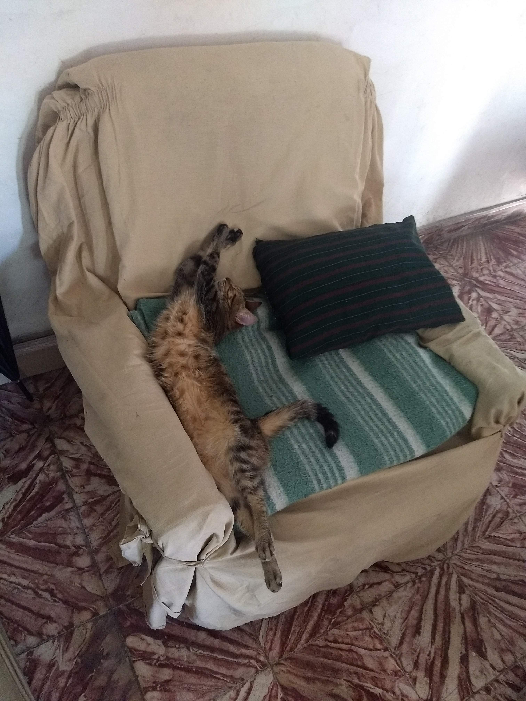

la vida de charlie
Charlie es una gata encantadora que vino al mundo en el año 2016 en la vibrante ciudad de Avellaneda, Argentina. Desde el momento de su nacimiento, quedó claro que esta felina tenía un carácter especial. Su historia es una que destila dulzura y comodidad, ya que su vida se ha centrado en dos cosas principales: la siesta y la serenidad.Desde temprana edad, Charlie mostró su amor innato por la tranquilidad. A diferencia de otros gatitos juguetones y traviesos, Charlie prefería encontrar el lugar más cálido y acogedor de la casa para tomar largas siestas. Ya sea en una cómoda cama, un rincón soleado o incluso en los brazos de sus humanos, ella siempre encontraba la manera de relajarse y descansar. La siesta se convirtió en su pasión, y pronto le ganó el apodo de "la experta en siestas" de la casa.
A lo largo de los años, Charlie se convirtió en un miembro querido de la familia y de su comunidad. Su personalidad tranquila y cariñosa la hizo muy querida por todos. A menudo, podías encontrar a Charlie acurrucada en el sofá o en la ventana, observando el mundo pasar con sus ojos curiosos. Además de su amor por la siesta, Charlie tenía una debilidad especial por las caricias y los mimos. Cuando alguien se acercaba para acariciarla, ronroneaba con alegría, demostrando su aprecio. Sus ronroneos se convirtieron en una banda sonora constante en la casa, una melodía relajante que siempre te hacía sentir bienvenido. A lo largo de los años, Charlie ha experimentado los altibajos de la vida, pero su actitud tranquila y su amor por la comodidad la han ayudado a superarlos. En el 2016, nació en Avellaneda, pero su presencia ha dejado una marca indeleble en la vida de aquellos que tienen el privilegio de conocerla. Hoy en día, Charlie sigue disfrutando de su vida en Avellaneda, compartiendo su amor por la siesta y las caricias con su familia. Su historia es un recordatorio de que la felicidad se encuentra en los momentos más simples y que a veces, todo lo que necesitas es un lugar cómodo para descansar y un poco de amor para ser realmente feliz.